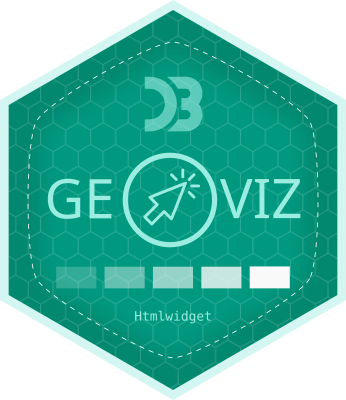

geoviz is an R package for thematic mapping. As its name suggests, it’s an implementation of the geoviz JavaScript library, itself based on the d3.js ecosystem ported by Mike Bostock. Like the original javascript library, the package can be used to create a wide range of interactive, zoomable vector maps, taking advantage of d3’s many features: proportional symbols, pictograms, typologies, choropleth maps, spikes, tiles, Dorling cartograms, etc. It can also be used to create pretty static vectorial maps in SVG format, suitable for editorial cartography.

The
geovizpackage is an R implementation of the geoviz JavaScript library via a htmlwidget. Its development follows the evolution of the library. The parameter names are the same. You can therefore refer to the JavaScript geoviz documentation here.geovizis not intended to compete with other mapping packages in R, such as mapsf or tmap.Since it’s based on d3.js, the philosophy behind this package is completely different as other R mapping packages. Map parameters use svg attributes rather than the usual R parameters. Thus,
strokeWidthis used rather thanlwd,fillrather thancol,strokerather thanborder, etc.geovizis not designed to handle voluminous datasets. It is suitable for light, generalized basemaps.geovizis designed to work with geographic data in wgs84 (not projected). Geometries are then projected on the fly using thecreate()function. Unlike other R packages based onsf, the projections used come from the d3.js ecosystem (d3-geo, d3-geo-projection & d3-geo-polygon).Maps generated by
geovizare zoomable. Two types of zoom are available. The classic type (pan and zoom) and the “versor” type for creating interactive globes.Maps created with
geovizare interactive. It is therefore possible to create tooltips to access information contained in geographic objects.Many different types of maps are available. The types can be combined with each other and are highly customizable.